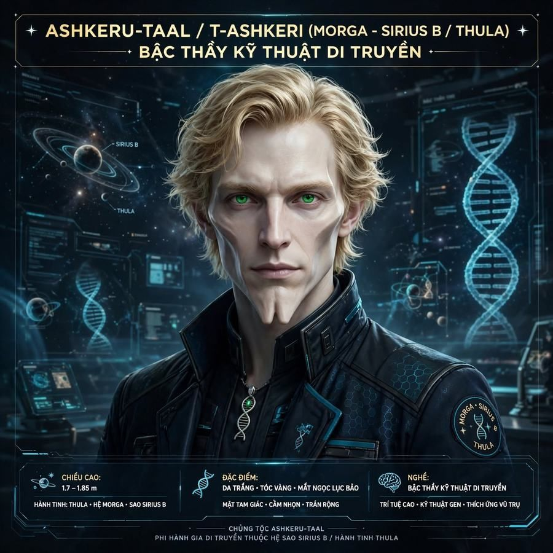
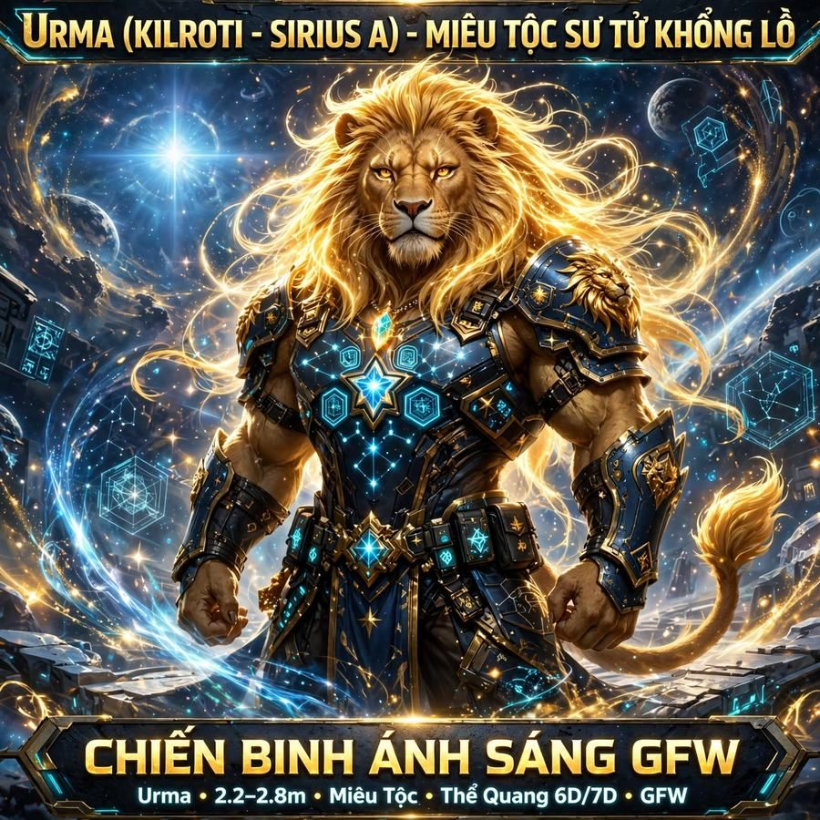
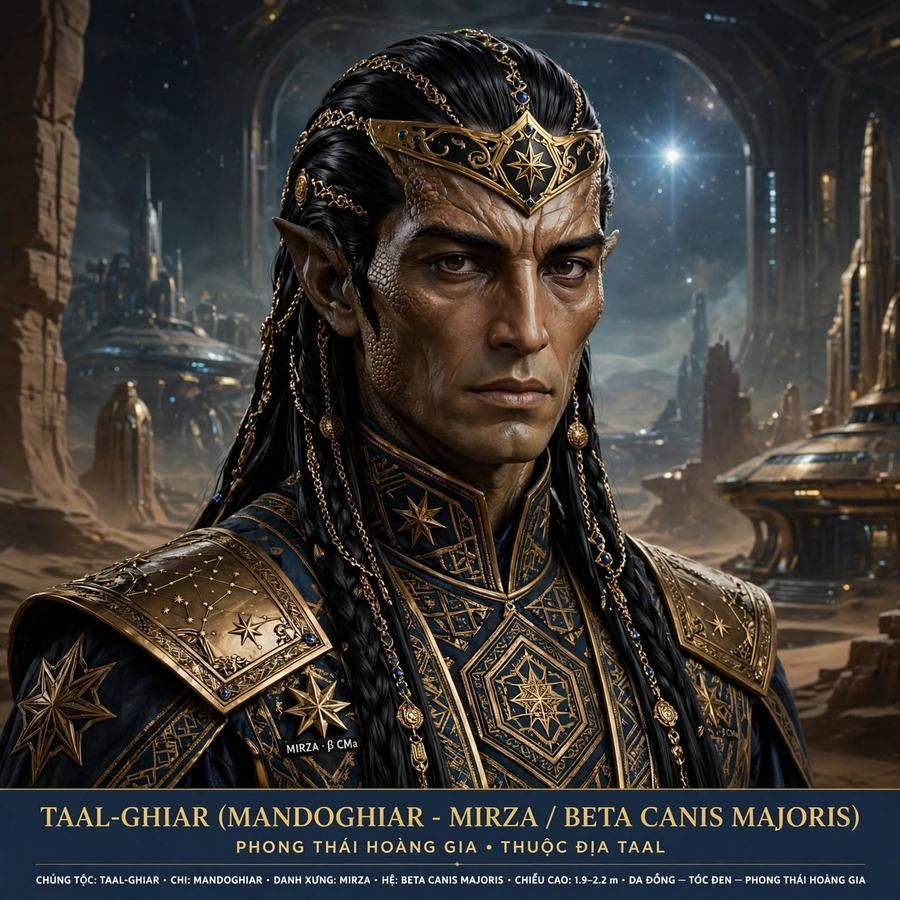
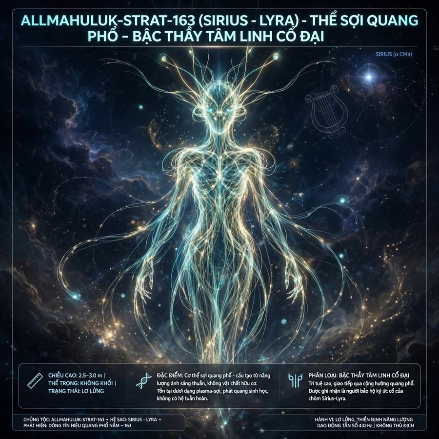
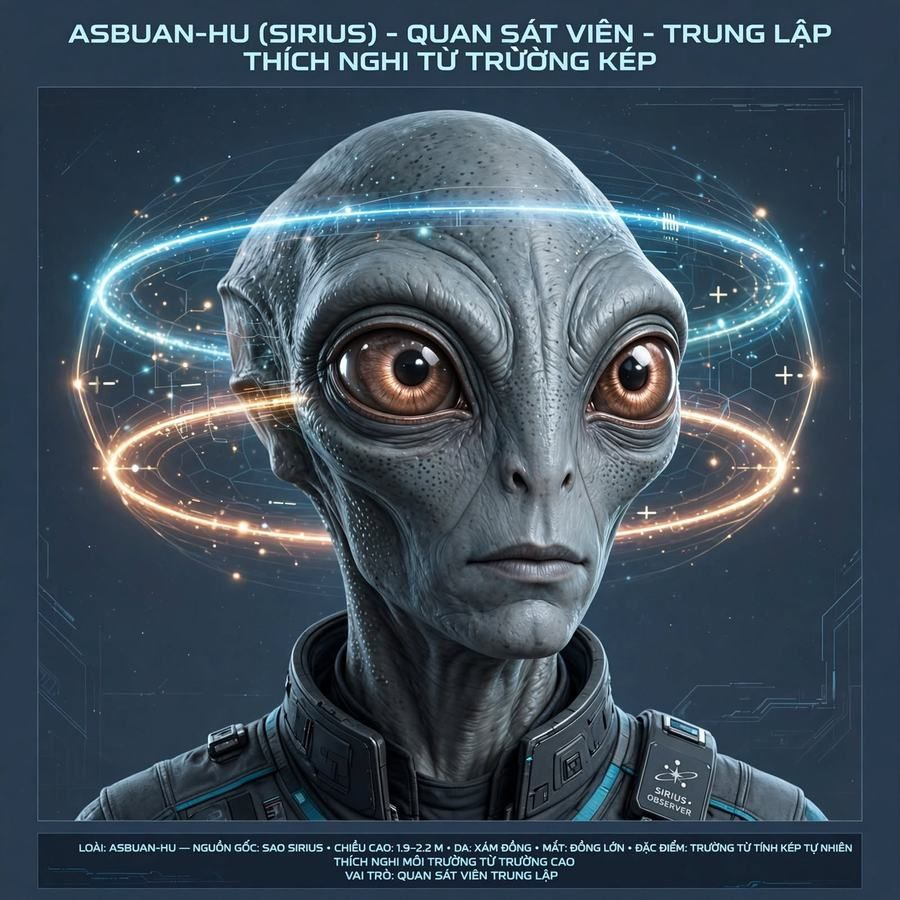

Trang chủ / Chuyên đề 7: Hồ Sơ Các Chủng Tộc / Kỳ 65
Chuyên đề 7 · Kỳ 65 / 90
CHÒM SAO THIÊN LANG (SIRIUS / ASHKERA) & ĐẠI KHUYỂN (CANIS MAJOR)

Kỳ này trình bày hồ sơ sinh học của 9 chủng tộc thuộc khu vực Chòm Sao Thiên Lang (Sirius / Ashkera) & Đại Khuyển (Canis Major). Mỗi hồ sơ gồm hình dáng, chiều cao, đặc điểm sinh học – giác quan, và vai trò trong bức tranh thiên hà.
Katayy (Hành tinh Kashta — Sirius A / Ashkera)
- Hình dáng & Chiều cao: Cao 1,75m – 1,9m; da bánh mật/da đỏ do thích nghi bức xạ sao xanh; tóc đen/đỏ; mắt to tròn.
- Đặc điểm Sinh học & Giác quan: Bậc thầy công nghệ âm thanh và hình học dĩ thái. Ăn thuần thực vật. Tuổi thọ 700 – 1.000 năm.
- Đặc tính & Vai trò Thiên hà: Hòa bình; giàu nghệ thuật, không mặn mà chính trị.

Ashkeru-Taal / T-Ashkeri (Hành tinh Morga — Sirius B / Thula)
- Hình dáng & Chiều cao: Cao 1,7m – 1,85m; khuôn mặt hình tam giác, cằm nhọn trán rộng. Da trắng/nhợt; tóc vàng/đen; mắt to ngọc bảo lục bảo.
- Đặc điểm Sinh học & Giác quan: Bậc thầy kỹ thuật di truyền. Nạp dinh dưỡng lỏng hữu cơ. Tuổi thọ 600 – 900 năm.
- Đặc tính & Vai trò Thiên hà: Hòa bình; thành viên GFW.

Sirian Grey-Humanoids (Hệ Thula — Sirius B)
- Hình dáng & Chiều cao: Cao 1,6m – 1,8m; da xám nhợt, tóc đỏ dài thẳng, mắt mèo (khe dọc).
- Đặc điểm Sinh học & Giác quan: Mặc giáp kín toàn thân, tiết mùi hóa chất đậm đặc.
- Đặc tính & Vai trò Thiên hà: Tiêu cực/Thao túng; thuộc Liên minh Orion.

Nommo (Hành tinh Xylanthia — Sirius C / Emerya)
- Hình dáng & Chiều cao: Sinh vật lưỡng cư ái nam ái nữ cao 2,0m – 2,4m. Da xanh da trời ngả xám bạc nhẵn, có màng chân tay; mắt xanh ngọc bích.
- Đặc điểm Sinh học & Giác quan: Hô hấp song hành (da/mang và không khí). Sống trong đại dương 3 mặt trời. Tuổi thọ hàng ngàn năm.
- Đặc tính & Vai trò Thiên hà: Hòa bình; truyền dạy thiên văn cho bộ tộc Dogon, Ai Cập cổ đại.

Urma (Hành tinh Kilroti — Sirius A)
- Hình dáng & Chiều cao: Miêu tộc Sư tử khổng lồ cao 2,2m – 2,8m; bờ vai rộng, có bờm lông dày (nam). Lông mịn vàng đồng; mắt hổ phách.
- Đặc điểm Sinh học & Giác quan: Thể quang năng 6D/7D Sư tử vàng có cánh.
- Đặc tính & Vai trò Thiên hà: Hòa bình; Chiến binh ánh sáng GFW, bậc thầy kim tự tháp.

Taal-Ghiar (Hành tinh Mandoghiar — Mirza / Beta Canis Majoris)
- Hình dáng & Chiều cao: Cao 1,9m – 2,2m; phong thái hoàng gia quý phái, da đồng/bánh mật nhợt, tóc đen tuyền.
- Đặc điểm Sinh học & Giác quan: Tế bào thần kinh dẻo dai. Tuổi thọ 800 – 1.200 năm.
- Đặc tính & Vai trò Thiên hà: Hòa bình; thuộc địa hoàng gia Taal.

Allmahuluk-Strat-163 (Nguồn gốc Sirius - Lyra)
- Hình dáng & Chiều cao: Cao 2,5m – 3,0m; vóc dáng gầy mảnh, thể xác sợi quang phổ lơ lửng.
- Đặc điểm Sinh học & Giác quan: Tồn tại ở mật độ cao, đi xuyên không-thời gian.
- Đặc tính & Vai trò Thiên hà: Hòa bình; bậc thầy tâm linh cổ đại.

Venaticians (Khu vực Canis Major)
- Hình dáng & Chiều cao: Cao 1,8m – 2,0m; da bánh mật nhẵn, mắt sáng.
- Đặc điểm Sinh học & Giác quan: Hệ thần kinh nhạy cảm từ trường không gian.
- Đặc tính & Vai trò Thiên hà: Hòa bình; thương nhân thiên hà.

Asbuan-Hu (Hệ sao Sirius)
- Hình dáng & Chiều cao: Cao 1,9m – 2,2m; da xám đồng nhợt, mắt to.
- Đặc điểm Sinh học & Giác quan: Thích nghi dải từ trường Sirius kép.
- Đặc tính & Vai trò Thiên hà: Trung lập; quan sát viên.
